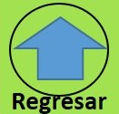

Resultado del Test rápido de Eneagrama 
- Respuestas A y I ↦ Eneatipo 7 El Entusiasta
- Respuestas A y II ↦ Eneatipo 8 El Desafiador
- Respuestas A y III ↦ Eneatipo 3 El Triunfador
- Respuestas B y I ↦ Eneatipo 9 El Pacificador
- Respuestas B y II ↦ Eneatipo 4 El Individualista
- Respuestas B y III ↦ Eneatipo 5 El Investidagor
- Respuestas C y I ↦ Eneatipo 2 El Ayudador
- Respuestas C y II ↦ Eneatipo 6 El Leal
- Respuestas C y III ↦ Eneatipo 1 El Perfeccionista